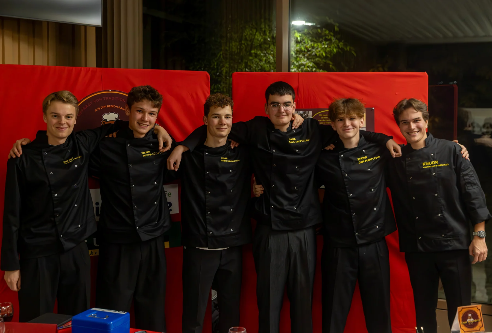

Schweizer Tradition.
Neu interpretiert.
Was an der Chilbi seit Generationen dazugehört, bekommt bei Knurr einen eigenen Charakter: klassisch, regional und mit Sorten, die vertraute Aromen neu verbinden.
Zwei Sorten.
Ein Knurr.
Hier lernst du unser Magenbrot kennen. Für Bestellungen, Firmenanfragen oder grössere Mengen kontaktierst du uns direkt.



Vom Schulprojekt
zur eigenen Marke.
Knurr startete mit sechs Schülern der Neuen Kantonsschule Aarau im YES Company Programme. Märkte, Pitches und das nationale Finale machten aus einer Schulidee eine Marke, die wir weiterführen wollten.
Heute führen Mattia Lüthi und Robin Hunziker Knurr zu zweit weiter – mit neuen Ideen und dem Ziel, Schweizer Magenbrot modern zu präsentieren.
Magenbrot, das
in Erinnerung bleibt.
Ob als Geschenk für Mitarbeitende und Kundschaft, für einen Anlass oder in grösserer Stückzahl: Wir besprechen Anfragen persönlich und finden gemeinsam eine passende Lösung.